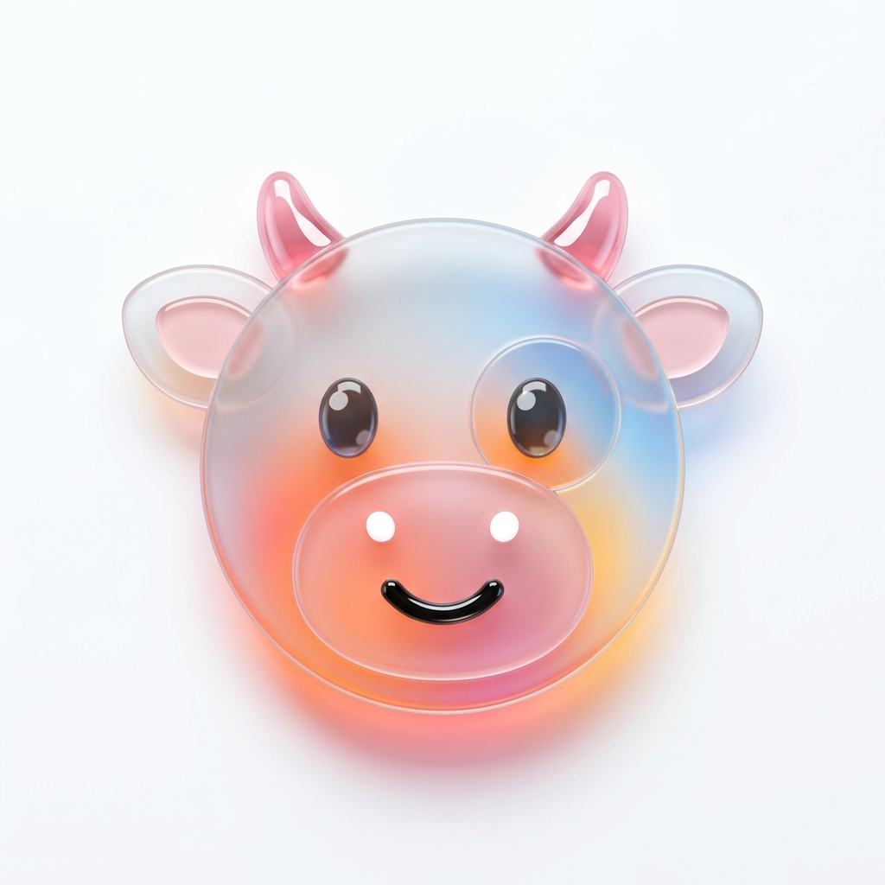
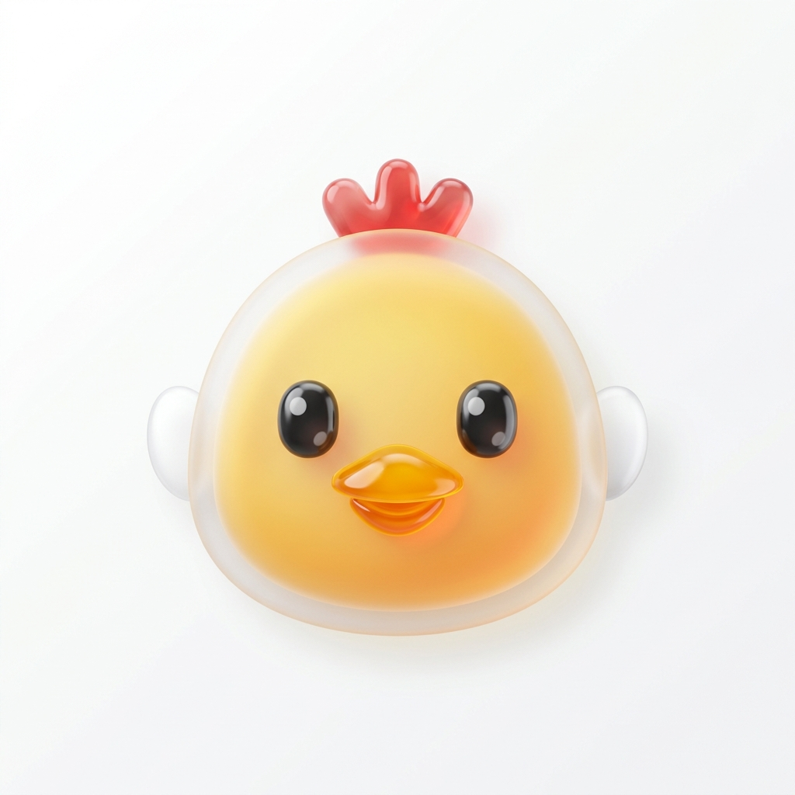

Potensi perekonomian Desa Tampojung Tenggina sangat bergantung pada sektor pertanian. Masyarakat menghasilkan berbagai produk pertanian seperti padi dan tembakau. Di musim hujan, masyarakat menanam padi. Di musim kemarau, mayoritas petani menanam tembakau dengan harapan kualitas tinggi dan harga jual yang menguntungkan. Selain pertanian, sektor peternakan juga menjadi andalan ekonomi masyarakat.
Potensi Pertanian
Tanaman Pangan
| Komoditas | Produksi (Ton/Tahun) |
|---|---|
| Padi | 98 |
| Jagung | 85 |
| Ubi Kayu | 4 |
| Ubi Jalar | 0,8 |
Buah-buahan & Perkebunan
| Komoditas | Produksi (Ton/Tahun) |
|---|---|
| Mangga | 0,9 |
| Jeruk | 0,3 |
| Tomat | 0,3 |
| Kelapa | 0,7 |
Tembakau — Komoditas Unggulan Musim Kemarau
Di musim kemarau, mayoritas petani Tampojung Tenggina memanfaatkan lahannya untuk menanam tembakau. Petani berharap kualitas tembakau yang tinggi dengan harga jual yang menguntungkan. Tembakau merupakan salah satu komoditas paling penting bagi perekonomian desa.

Potensi PeternakanSapi (Skala Rumahan)
Sebagian besar warga memiliki sapi sebagai tabungan dan pekerjaan sampingan. Mayoritas setiap rumah memelihara sekitar 2 hingga 4 ekor sapi.

Unggas (Skala Rumahan)
Ayam dan bebek dipelihara warga hanya dalam skala kecil (sekitar 10 ekor per rumah) untuk kebutuhan rumah tangga, bukan peternakan skala besar.
Mata pencaharian utama warga adalah di sektor pertanian. Namun, kepemilikan sapi di hampir setiap rumah tangga menjadi ciri khas tabungan tradisional dan penggerak ekonomi sekunder masyarakat Desa Tampojung Tenggina.
Penggunaan Lahan
| No | Penggunaan Lahan | Luas (Ha) |
|---|---|---|
| Lahan Sawah | ||
| 1 | Irigasi Teknis | 19 |
| 2 | Tadah Hujan | 4,5 |
| Lahan Bukan Sawah | ||
| 3 | Tegal/Kebun | 15.634 |
| 4 | Ladang/Huma | 15.272 |
| 5 | Pekarangan/Bangunan | 2.456 |
| 6 | Perkebunan | 20,7 |
| 7 | Tanah Wakaf | 11,2 |
| 8 | Pertokoan/Perdagangan | 7,5 |
| 9 | Kehutanan | 6,25 |
| 10 | Kolam/Empang | 1,5 |